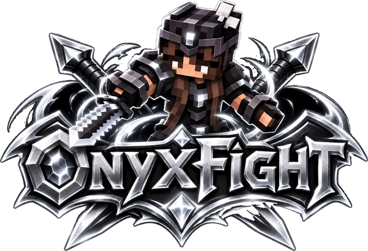
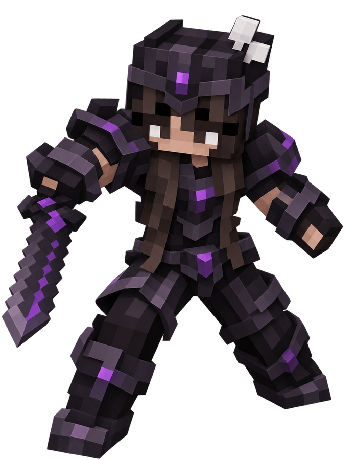

OnyxFight
OnyxFight

Serveur PvP Faction moddé au combat de la 1.8 : factions, KOTH, largages, catastrophes en warzone, Boss du Gouffre, runes légendaires, compagnons et cosmétiques en 3D.
Windows · le launcher installe Java, Minecraft et les mods tout seul.

1. Crée ton compte
Un pseudo et un mot de passe, c'est tout. Pas besoin de compte Microsoft.
2. Installe le launcher
Il prépare le jeu, les mods et se met à jour automatiquement.
3. Joue
Connecte-toi dans le launcher avec ton pseudo et ton mot de passe, puis clique sur Jouer.